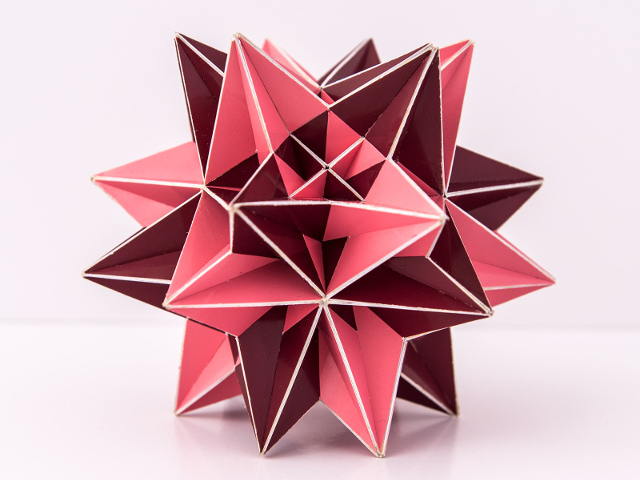

Compound of Two Great Icosahedra

This compound has the same symmetry a cube and you can see a cross in the order four symmetry axis. At the same time you can recognise pentagrams and equilateral triangles. The diameter of the model is around 13 cm (~5.1 inches)
This wasn't my first try of this model. I started building in June 2018 , but noticed that it didn't work well and I decided to start over in August to make corrections for the thickness of the material. The model was finished in November 2018.
For all pictures are copyrighted by PhotoArt Studio Hörby
Last Updated
2018-12-09